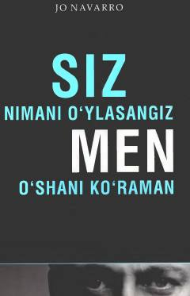

SNInson tana tili va noverbal harakatlar orqali uning o'ylarini o'qish sirlari.
Ushbu kitob insonning noverbal xatti-harakatlari, tana tili va uning sirli holatlarini tahlil qilishga bag'ishlangan. Muallif sobiq FQB agenti sifatida insonlarning yashirin niyatlarini, qo'rquv va yolg'onlarini tana harakatlari orqali qanday aniqlash mumkinligini o'rgatadi.